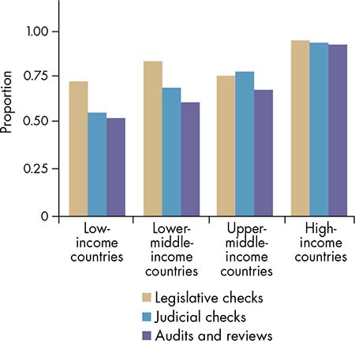
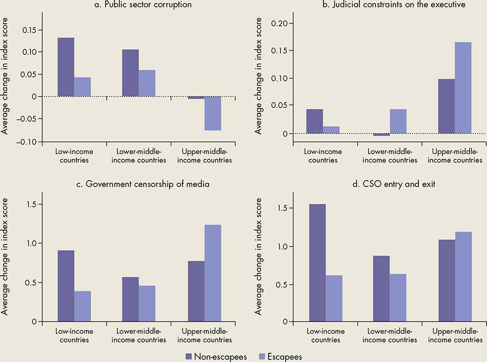

CHAPTER 5
Governance for growth
If a firm in Brazil or Mexico is asked how long it has to wait to receive approval for new construction, the answer could range from as little as 1 day to more than 100 days (figure 5.1). Such remarkable variation in the wait time experienced by firms within the same country is true of almost any basic regulatory procedure in most low- and middle-income countries. Examples of such procedures are receiving a license to set up a new firm or a permit to import an item.1
Figure 5.1 Length of time needed for firms to obtain a construction permit varies widely
Sources: WDR 2017 team, based on data from World Bank, Enterprise Surveys, circa 2006 to 2014.
One reason for the variance in regulatory implementation could be that some firms have more influence over the policy arena than others. For example, recent firm-level studies suggest that, to the detriment of long-term economic growth, firms with powerful political connections are unduly favored in the way certain policies are designed or implemented.2 These firms receive preferential access to state credit, land, and import licenses. The sectors in which they operate are protected from competition from other firms through high regulatory barriers to entry. This form of policy subversion has significant negative effects on the economy.
How policy “capture” slows economic growth
This chapter explains how and when powerful groups with narrow interests can have an undue influence on policy (“capture”) and slow down economic growth, even in the context of high state capacity.3 Such dominant groups can include politically connected firms and lobbies for industry, farmers, or consumers. This chapter also analyzes cases in which shortsighted, opportunistic state actors renege on policy commitments, harming investors. In some cases, existing norms such as tolerance of corruption in public agencies can reinforce such policy failures.
That said, the influence of interest groups, while ubiquitous, does not always render growth policies ineffective; sometimes, it can even improve them. How this process plays out depends on the characteristics of the government agencies that enact the policies in question, as well as the incentives of influential groups, such as industry associations, that interact with those agencies. Understanding what drives this difference can help identify ways to improve policy effectiveness.
One lesson that emerges from such understanding is that designing second-best policies that can achieve at least the partial goals of security, growth, or equity may be more effective than designing ideal policies that are at high risk of capture (such second-best policies are considered implementable). A second lesson is the value of avoiding policies that look good in the short term but could end up reinforcing the power of dominant groups that could block further reforms, thereby hindering the effectiveness of policies in the future. A third lesson is that undue influence from dominant groups can be counterbalanced by the appropriate design of incentives within public agencies, checks and balances between agencies, and mechanisms that extend accountability to a broad group of firms and individuals. Such reforms can expand the set of implementable policies.
This approach assumes that the interests of high-level policy makers are aligned in the direction of reform. Whether that is the case depends on the evolution of the broader governance environment, a topic examined in part III of this Report.
A lesson is the value of avoiding policies that look good in the short term but could end up reinforcing the power of dominant groups that could block further reforms.
How governance matters to growth: A microeconomic perspective
There is a clear positive correlation between aggregate measures of governance and per capita income across countries (figure 5.2). Because countries had similar levels of per capita income in the distant past, current differences in their per capita income largely reflect differences in their long-term growth rates.4 Thus governance and long-term growth are positively associated.
This correlation should be viewed with some caveats, however. It could reflect reverse causation from growth to governance, or some third factor (such as accumulated knowledge and skills) that affects both governance and income growth. Bearing in mind these caveats, many cross-country studies suggest that the nature of governance—as reflected in broad institutional measures such as protection of property rights, rule of law, and absence of corruption—matters to long-term growth.5
Figure 5.2 Per capita income and governance are correlated
Sources: WDR 2017 team, using data from IMD World Competitiveness Online, and World Bank, World Development Indicators (database, GDP per capita). For both sources, the data are shown for 2010.
Note: “Bureaucracy” indicates to what extent bureaucracy does not hinder business activity; “government decisions effectively implemented” indicates to what extent government decisions are effectively implemented; “personal security and private property” indicates whether personal security and private property rights are adequately protected; and “bribery and corruption” indicates to what extent bribery and corruption do not exist in a country. The scale ranges from 0 (worst outcome) to 10 (best outcome). GDP = gross domestic product.
Even within countries, historical differences in institutions that affect property rights and collective action are associated with persistent differences in levels of economic development. For example, in some regions of Peru an extensive system of forced mining labor (mita) was in effect from 1573 to 1812. Today, the average household consumption levels in those regions are about 25 percent lower than in adjoining regions. One explanation is that in areas without mita, the landowning class that emerged had an incentive to set up stable property rights institutions. Today, areas that did not have the mita system continue to have more secure property rights and do a better job of providing public goods (Dell 2010).
When change is viewed over the shorter time span of decades rather than centuries, the relationship between broad, aggregate measures of governance and economic growth is weaker (figure 5.3). Over the last century, growth accelerations and slowdowns that lasted as long as a decade do not seem to have been correlated with major changes in governance, nor have sustained periods of high growth lasting as long as three decades.6 It is possible for economies to grow without big changes in the nature of governance, but it is not clear how long such growth can be sustained.
Figure 5.3 Medium-term growth and governance are not correlated

Sources: WDR 2017 team, using data from IMD World Competitiveness Online (1996 and 1998 for “government decisions effectively implemented”), and World Bank, World Development Indicators (database, average annualized growth rate in logs, 1990–2015).
Note: “Bureaucracy” indicates to what extent bureaucracy does not hinder business activity; “government decisions effectively implemented” indicates to what extent government decisions are effectively implemented; “personal security and private property” indicates whether personal security and private property rights are adequately protected; and “bribery and corruption” indicates to what extent bribery and corruption do not exist in a country. The scale ranges from 0 (worst outcome) to 10 (best outcome).
What are the mechanisms behind the aggregate relationship between governance and growth? Because different dimensions of governance are correlated across countries, it is not easy to delineate their impacts on growth using a cross-country analysis alone. A more microeconomic analysis of the mechanisms through which governance affects growth is therefore a vital complement to the macroeconomic analysis of governance and growth (Pande and Udry 2006).
Two sources of growth: Investment and efficiency
On the surface, growth in per capita income has two sources: investment and efficiency. On the one hand, investment is the process by which economies accumulate physical capital, skills, and knowledge. Efficiency, on the other hand, determines how well this labor and capital are put to use. In general, at least half of the per capita income differences across countries is attributable to differences in countries’ efficiency levels (total factor productivity, or TFP). The rest is due to differences in investment (accumulation)—see Caselli (2005, 2016). Both investment and efficiency thus matter to growth.
Countries vary in the emphasis they place on various forms of investment and efficiency in their growth models. Some growth models emphasize accumulation, such as the mobilization of savings for industrial investment. Other models emphasize growth in efficiency through innovation and competition among firms. Growth models based on factor accumulation may require a different governance configuration than those based on efficiency. Transitioning from one model to another has proven to be a complex policy challenge (Gill and Kharas 2015)—see spotlight 6 on the middle-income trap.
Governance can affect investment and efficiency through two types of institutional “functions.” The first deals with commitment—that is, creating an environment in which firms or individuals feel secure in investing their resources in productive activities and have the incentives to use them efficiently. The second pertains to socially beneficial collective action to coordinate investment decisions and promote cooperation among investors to solve potential market failures.
The key governance functions: Enhancing commitment and collective action
In the absence of a credible commitment to the security of property rights (that is, when there is risk of expropriation), the incentives for investment or innovation will be limited. Firms and individuals that experience lower security will invest less in productive activities. Moreover, differences across firms in the level of security from expropriation will affect the efficiency of resource use. If the more productive firms in an economy experience lower security than the less productive ones, then investment by productive firms will be inefficiently low, leading to misallocating resources and thwarting growth.
Consistent with theory, household-level studies find that farmers are more likely to make long-term investments in their land when their tenure is more secure, and urban households are more likely to renovate homes when the risk of being dispossessed is lower.7 Secure rights also improve labor allocation because protecting one’s property is no longer a primary motivation in decisions about where to work (Field 2007). Similarly, studies find that firms that perceive themselves to be more secure from expropriation reinvest more of their profits in their business (Johnson, McMillan, and Woodruff 2002b). Theory also suggests that well-defined property rights should improve the functioning of credit and other asset markets, but empirical evidence in support of such suggestions is weak.
Enforcement of contracts governing economic transactions is also critical because problems with contract enforcement prevent specialization and an optimal division of labor (North 1990; Costinot 2009). Suppose a firm is considering whether to specialize in producing parts for a bigger firm. Once committed to this specialization, it will have no alternative but to sell those parts at whatever price that particular buyer offers. Thus the firm will hesitate to specialize unless both parties can agree on an enforceable contract with a fair price. In small economies, reputation and relationships can be effective means of enforcement, but as growth leads to greater market size, impersonal interactions become more likely, and thus formal contract enforcement begins to matter more (Dixit 2007). Empirical studies find that a strengthened formal enforcement system (such as through the courts) can foster the creation of new business relationships, promote trade in goods, and increase the flow of credit to firms.8
The design and implementation of regulations that affect competition between firms are another policy dimension central to growth. For example, poorly designed licensing requirements for new firms can make it difficult for entrepreneurs to bring new investment ideas to fruition, and they can reduce the competitive pressure on existing firms to innovate and become more productive.9 For example, a policy of industrial licensing in India required firms to obtain government permission before setting up a new factory or expanding output in an existing factory. The process of license approval was onerous and unpredictable. Loosening these requirements in some industries in the 1980s may have increased efficiency levels by as much as 22 percent (Chari 2011).
Some forms of collective action, such as coordinating investment and ensuring cooperation to prevent free-riding, can solve potential market failures that can impede growth and investment in public goods. Although discussing all possible market failures is beyond the scope of this chapter, what follows illustrates the key issues by looking at a specific type of failure.
The insight that failure to coordinate investment activity could lead to underdevelopment is decades old.10 Suppose an industry could upgrade to a modern technology that relies on a range of specialized skills. For a worker, investing in learning those skills does not make sense if it is not clear that the modern technology will be adopted. For a firm, investing in the new technology does not make sense unless a supply of the required specialized skills will be available. Thus without some way of coordinating the decisions of workers and firms, the industry could remain trapped in a low-level equilibrium.11 Such coordination problems can occur in many contexts, ranging from finance and adoption of technology to innovation and industrial clusters.12
Policies to address coordination and other collective action problems are difficult to design and implement. For example, when complementarities between firms could lead to a coordination failure, governments could use subsidies or taxes to encourage firms to invest in a coordinated manner (Rodrik 1996). But targeting such a subsidy scheme to the right set of firms requires information on precisely which firms could have spillovers on others, and on how much they are investing (Bond and Pande 2007). Because of such implementation challenges, policies to address collective action problems in growth are particularly sensitive to the quality of governance.13
How policies are affected by undue influence from powerful groups
A poor capacity to design or implement policies could be one reason why governments do not enact policies that are functionally optimal for aggregate growth. Yet, even when such capacity exists and a first-best policy has been identified, those in power may not have the incentive to choose that policy. Indeed, specific actors in the policy arena may be able to design or implement a policy that maximizes their private benefits rather than social welfare because they have so much bargaining power. In this Report, this arrangement is called capture. Capture is not easy to identify, and there is the risk of mistaking what was simply a misinformed policy choice for deliberate subversion.
Recent years have seen a burgeoning of quantitative research into this question. This research has detected specific forms of capture, and in some cases it has even measured its efficiency costs. For example, studies of trade policy suggest that even in high- income countries policy choice can unduly reflect the preferences of groups with high levels of influence in the policy arena. Although low trade barriers are generally good for long-term growth, domestic industries that compete with imports stand to lose from them in the short term. Political influence or campaign contributions from industry lobbies and labor unions have been shown to affect the setting of import tariffs. Larger and better-organized industries that compete with imports tend to win more import protection.14
The potential power to influence policy is distributed unevenly, not only across industries but also across firms within industries. In most countries, some firms are much better connected to the government than others. Sometimes, state actors collude with such politically connected firms to subvert a policy in the interest of those firms, possibly to the detriment of unconnected firms in the same industry.
Such capture by politically connected firms may not be easily identifiable or as large scale as, say, setting high tariffs in import-competing industries, but the evidence suggests that its economic costs are far from trivial. In the 1990s, for example, some of Indonesia’s largest industrial groups had strong connections to President Suharto.15 Between 1995 and 1997, rumors about the state of Suharto’s health circulated on several occasions. Each time, the more closely industrial groups were connected to the president, the more their stock values fell (figure 5.4). In fact, the more serious the health rumor, the greater was the fall in stock values. Because this decline was not connected to other changes in market conditions or the productivity of connected firms, the drop in share prices was a proxy for the private benefits of being able to capture policy through political connections (Fisman 2001). Based on a similar method, the estimated value of political connections in the Arab Republic of Egypt during the Mubarak era was about 13–16 percent of firm value (Chekir and Diwan 2014).
Figure 5.4 In Indonesia, the stock value of politically connected firms fell when the connection was jeopardized
The closer that industrial groups were to President Suharto, the more the value of their stock fell as rumors about the president’s health circulated
Source: Fisman 2001, figure 1.
Capture by politically connected firms may not be easily identifiable, but the evidence suggests that its economic costs are far from trivial.
How politically connected firms gain undue advantage
The benefits of policy capture to politically connected firms can be economically significant. Understanding the ways in which policy capture occurs is therefore important.
Diverting credit. One way in which state actors favor connected firms is to divert government loans to them. In Pakistan, for example, between 1996 and 2002 politically connected firms borrowed 45 percent more and had 50 percent higher loan default rates than other firms (Khwaja and Mian 2005). This preferential treatment was related entirely to loans from government banks. Moreover, it increased when the power of the connected politician increased, and it fell when there was more electoral competition within the politician’s constituency. In Brazil, firms that made campaign contributions to winning candidates in the 1998 and 2002 elections had higher returns and subsequently received greater credit from banks (Claessens, Feijen, and Laeven 2008). A study of Malaysia at the time of the Asian financial crisis found that the market value of politically connected firms improved relative to that of other firms after international capital controls were imposed, suggesting that connected firms had easier access to domestic credit (Johnson and Mitton 2003).
Granting import licenses to favored firms. Another way to channel favor to connected firms is to grant import licenses only to specific (favored) firms. In Suharto-era Indonesia, being politically connected tripled the likelihood of receiving a license relative to a firm’s competitors. And the licenses conferred monopolistic power on the licensee. For example, a highly connected firm in the milk industry was granted import licenses for 12 inputs necessary to produce milk, whereas some other firms in the same industry had three to four licenses at most. This situation forced competitors to rely on the connected firm or on inferior domestic supplies (Mobarak and Purbasari 2008).
Using market regulations to favor firms. Market regulations can also be used to favor connected firms. For example, regulatory barriers to the entry of new firms can be a means of protecting incumbents to the detriment of market entry and competition. In Tunisia during the regime of Zine El Abidine Ben Ali (1987–2011), firms under the control of the ruling clan accounted for a disproportionately high share (21 percent) of total private sector profits (Rijkers, Freund, and Nucifora 2014). The superior profits of these connected firms may have been due to the heavy regulation of firm entry, investment, and foreign direct investment in the sectors in which they had a heavy presence. Indeed, the gap in profits between connected firms and others was higher in the more regulated sectors, suggesting that entry regulation served to shield connected firms from competition. There is similar evidence from Mubarak-era Egypt (Diwan, Keefer, and Schiffbauer 2015).
Political cycles and populism
Potentially, any group of firms, workers, or consumers that is politically influential can influence policies. For example, the adoption of “green growth” policies that are socially beneficial and would not necessarily slow down economic growth could be blocked by influential groups of farmers or consumers who stand to lose from the policies in the short term (box 5.1). Sometimes, it is hard to predict which side will manage to tilt policies in its favor. For example, in the utilities industries, the unregulated price can be inefficiently high, and there is a valid economic argument for regulating the price. However, the regulators may set the price too high if they collude with the utility firm, whereas if the countervailing influence from consumer advocacy groups prevails, regulators may set the price too low.16
Tilting policies to favor politically influential groups. Sometimes, politicians direct public investment to benefit narrow groups of supporters—a practice known as clientelism (see chapter 6). Such a client-based allocation of public investment is likely to be highly inefficient.
More generally, public resources can be allocated in favor of politically influential groups without necessarily involving a strict patron-client relationship. For example, many countries have development programs that direct state credit to small firms, rural enterprises, and farmers. This credit can be used to favor groups that have outsized political influence. Cole (2009) found that from 1985 to 2009 in India agricultural credit from state banks increased by 5–10 percentage points in an election year. This higher lending during election years targeted places where the electoral race was particularly close, hinting at the political motives behind the credit boom. Such political cycles in government lending during election years have been observed in many countries (Dinc 2005). In Italy, the interest rates charged in the 1990s by politically affiliated banks varied with the election cycle, which is also suggestive of political influence on lending (Sapienza 2004).
Misallocating public investment. Failed industrial development programs are another example of how political influence can undermine growth by misallocating public investment. Governments often direct public investment to specific sectors or regions, ostensibly to address coordination failures. Such programs could become a vehicle for providing hidden benefits to politically influential groups (Coate and Morris 1995). For example, landowners and workers in politically important regions might gain if an industrial zone is located in their region, raising prices and wages.
The disappointing experience of Sub-Saharan Africa with industrial coordination policies is illustrative. Defying economic logic, one program in Ghana involved the transport of cattle hides to a tannery 500 miles to the south in the country, only to send the leather back north to a footwear factory 200 miles away—all to serve a market a farther 200 miles north. Poor siting of the tannery thus rendered the program economically unviable (Robinson 2009). Some of these case studies conclude that poor location decisions were the outcomes of political influence. In Zambia, for example, the Industrial Development Corporation evidently chose economically infeasible locations for many subsidiary firms, mainly on the basis of providing employment in rural areas (Robinson 2009).
The cost of capture
The most obvious cost of policy capture is the inefficient allocation of public resources. For example, bank loans should go to the most productive firms, but that does not necessarily happen when lending is based on a firm’s political connections. Corporate lending data from Pakistan for 1996–2002 reveal that connected firms received a disproportionately large share of credit, but they were more likely than other firms to default on their loans and they were less productive. Based on the gap in productivity between connected firms and other firms, the annual loss from giving disproportionate amounts of credit to connected firms could have been as high as 1.6 percent of GDP (Khwaja and Mian 2005).
Such misallocation could also have a long-term impact on growth through its detrimental effects on the basic economic process of creative destruction—that is, the entry of new firms, investment by existing firms to become more productive, and the exit of unproductive firms.17 Entrepreneurship is likely to be discouraged in an environment in which firms with political influence earn rents (disproportionate benefits) at the expense of more efficient or more innovative firms that lack influence. By tilting the playing field against ordinary firms, such capture can also make growth less inclusive. But measuring such long-term costs is difficult.
This reckoning of the costs of undue influence on policies is relative to a benchmark in which resources are efficiently allocated. However, the removal of means of rent-seeking by influential firms could have other systemic effects on the economy. Indeed, according to one view, many low-income economies are characterized by socioeconomic relationships based not on impersonal rules but on personal connections and privilege.18 In this political order, the elites manipulate the economy to maintain rents for powerful groups. This manipulation then serves to maintain social order and restrain violence. In such a world, “capture” is just one manifestation of deeper political economy problems, and so long as those are not addressed, simply prohibiting means of capture and rent-seeking will not lead to efficient outcomes (Acemoglu and Robinson 2013).
When interest group influence is not necessarily bad for policies
Sometimes, the self-interest of powerful businesses can coincide with policies that are good for long-term growth. The expansion of trading opportunities in the Mediterranean in the 10th to the 12th centuries, for example, led to the establishment of a broad-based merchant class in that part of the world. This merchant class was interested in market-supporting institutions that would enable trade for all its members. In Venice, it used its economic power to push for the establishment of robust contracting institutions and constraints on the executive (by ending the practice of hereditary doges and instituting a de facto parliament). Similarly, the merchant class that arose in Great Britain because of the growth of Atlantic trade in the 1600s pushed for better property rights and contracting institutions.19
Sometimes, the self-interest of powerful businesses can coincide with policies that are good for long-term growth.
More contemporary case studies suggest that, for their collective benefit, business associations have helped governments improve various dimensions of the business environment (such as secure property rights, fair enforcement of rules, and provision of public infrastructure) through lobbying efforts or better monitoring of public officials (Doner and Schneider 2000). They have also helped solve coordination problems. The Republic of Korea’s phase of growth through export-oriented industrialization, which lasted for three decades, exemplifies this kind of pro-growth state-business interaction.20 Other examples include the footwear manufacturers’ association in Brazil, the coffee federation in Colombia, and the textile manufacturers’ association in Thailand, all of which played a coordinating role in reducing the costs of information about export markets (Doner and Schneider 2000).
Broad-based business associations are more likely to have an interest in pushing for better institutions rather than narrow rents. It is in the collective interest of firms in an industry to prevent policy capture by a few of them. Industry groups can develop collective mechanisms that prevent members from colluding with state officials and subverting policies in their narrow interest (Dixit 2015). Case studies suggest that business associations whose membership represents a large segment of the industry tend to be more influential and more “developmentally oriented” in their influence (Doner and Schneider 2000).
The extent and type of transparency also affect the nature of state-business interaction. When a state agency and the firms with which it interacts have a monopoly over critical information, there is a greater scope for them to collude and subvert policy in their mutual interest. Consider the regulation of a natural monopoly such as a public utility. Typically, the regulatory agency caps prices and compensates the utility firm based on an assessment of the firm’s cost of production. In such situations, the firm could gain by colluding with the regulator to overstate its cost. The gain from such collusion is larger (and the chances it will be detected, lower) when the regulator and the firm know more than others about the cost (Laffont and Tirole 1991, 1993).
The nature of the government agencies that interact with firms also determines when state-business links will degenerate into narrow interest group capture. One example is the design of some industrial development agencies in East Asia from the 1950s to 1970s. Japan’s Ministry of Trade and Industry (MITI), for example, combined bureaucratic autonomy with strong business ties. Although this step was necessary for the agency to be effective in coordinating industrialization, it also exposed the agency to capture. MITI, however, was also highly meritocratic, with bureaucrats following long-term career paths, clear rules, and established norms. It drew staff largely from a select group of elite technocrats who had strong informal ties with one another, giving the agency an unusually high level of internal coherence. This organizational strength may have prevented MITI from being captured by narrow interests (Wade 1990; Evans 1995).
Policy design under risk of capture
How should the risk of undue influence from dominant groups be taken into account in the design of policies and by the government agencies responsible for their implementation? This section begins by discussing a pragmatic approach to policy design that duly considers the probability of capture.
Designing policies that are implementable
Sometimes, when the possibility of capture looms large, policies that are first-best on the basis of economic efficiency are less implementable than second- best ones. Why? Even a powerful interest group must expend effort and resources to gain influence. The benefits of a second-best policy may be too small to make it worth the cost for interest groups to expend such effort and resources. Building on this insight, policies are often designed to give less room for discretion at the implementation stage. For example, when a regulator mainly enforces rigid rules, there is less scope for subverting the enforcement of those rules to award undue favor. As a result, the benefit from capture is too low.21
Admittedly, designing policies that are less susceptible to capture involves a trade-off with efficiency. Replacing regulatory discretion with rigid rules gives the regulator less room to adapt enforcement to changing conditions. Rigid regulation thus imposes excessive costs on firms.
The risk of capture by self-interested, myopic state actors too can be addressed through pragmatic policy design—although with the same efficiency trade-offs. Think of a situation in which a government wants to attract foreign direct investment (FDI), but there is a history of FDI disputes, and investors are hesitant because they perceive a high risk of expropriation. Although strengthening checks and balances on state actors can reduce the perceived likelihood of expropriation, such institutional reforms take time. In the meantime, there are ways to design the FDI contract to make expropriation less likely. Efficiency dictates a revenue-sharing scheme in which the host country receives a fixed amount every period, leaving the investor with strong incentives to increase profitability. However, when expropriation is a possibility, a more practical revenue-sharing scheme is one in which the host country automatically receives more (less) revenue when profits are high (low)—see Engel and Fischer (2010). This scheme is more consistent over time, as it takes into account the government’s incentives to uphold its commitment under different scenarios. Spotlight 7 addresses similar issues in the design of contracts for public-private partnerships (PPPs).
To put it in general terms, policies that are compatible with the existing balance of power may not be ideal, but they can effectively deliver growth. For example, in China the Township and Village Enterprises (TVEs) policy yielded strong investment growth until the mid-1990s (Qian 2003; Yao 2014). This policy was an unusual way of committing to property rights because TVEs were under the control of local community governments, and not, as is more common, under full private or central government control. Nevertheless, the policy was effective because of China’s context at that time. From the era of central planning, China had inherited a strong ideology opposing private property, and firms lacked legal protection for their private property rights. Giving local governments control stakes in local firms and tying local fiscal outcomes and cadre incentives to TVE success were important factors in making the commitment to TVE property rights credible.
Anticipating how a policy could change the balance of power
Beyond its immediate impact on investment and production, an economic policy could have far-reaching consequences for governance—and thus growth—by altering the balance of power. Consider how a policy that promotes international trade could have such an effect. As discussed earlier, in both 11th-century Venice and 17th-century Great Britain, the growth of trade led to a rising merchant class, which in turn helped establish strong contracting and property rights institutions. But theory suggests that these effects were not inevitable, for trade does not always affect the distribution of economic power and incentives in the same way (Do and Levchenko 2009). Indeed, over time Venetian wealth from trade became concentrated in a narrower set of merchant families. No longer needing the support of smaller merchants, they used their power to institute an oligarchy (Puga and Trefler 2014).
The sugar boom that swept over the Caribbean islands around the 1650s and lasted for more than 200 years also illustrates this point. Before the advent of large-scale sugar production, these islands were typically smallholder peasant societies. The sugar boom, however, concentrated power in the hands of large plantation owners—a development that has been associated with the rise of slavery, as well as the persistent undermining of the property rights of small farmers in the region. This institutional stunting had serious adverse consequences for long-term growth (Levchenko 2016).
Thus anyone assessing a policy that seems optimal in theory should ask if, in the given context, it could concentrate economic power in a way that would ultimately undermine institutions.22 Consider the experience of the Russian Federation and eastern European countries in their transition toward market economies At the time, there was a consensus among economists that the privatization of state-owned enterprises (SOEs) was a priority for improving the efficiency of these economies. Russia and many eastern European countries therefore focused on rapid, large-scale privatization of SOEs. But the way in which privatization was implemented created a new class of oligarchs who were able to block other policies that could promote competition (such as easing the procedure for setting up a new business). As a result, many of these economies are still struggling with inefficient, oligopolistic industries. This is consistent with the view that reforms that create an initial concentration of gains may engender strong opposition to further reform from early winners (Hellman 1998). By contrast, Poland chose to focus first on reforms that would make it easy for new firms to enter and privatized existing firms more gradually. This sequencing created a class of young firms that were collectively interested in further reforms, while preventing the sudden emergence of a powerful group of large firms that could block reforms (Jackson, Klich, and Poznańska 2005).
How the design of public agencies mediates the influence of powerful groups
Why are some public agencies able to work with different interest groups to design and implement policies without being unduly influenced by any particular group, while others are captured by dominant groups? The answer depends on a number of features of the internal design of bureaucracies. The design features of public agencies, such as how officials are selected, how the performance of officials is assessed and rewarded, and how much discretion they have in implementing those goals, can help to mediate the influence of powerful groups. The allocation of functions across agencies and the role of oversight agencies such as auditors also matter (Tirole 1994). Finally, as discussed in the World Development Report 2015: Mind, Society, and Behavior (WDR 2015), bureaucratic norms can emerge that facilitate or obstruct capture.23
The design features of public agencies, such as how officials are selected, how the performance of officials is assessed and rewarded, and how much discretion they have in implementing those goals, can help to mediate the influence of powerful groups.
Selection methods, incentives, and intrinsic motivation
Recently, a number of studies have examined empirically how selection and incentive structures in bureaucracies affect the behavior of officials. This research can be useful for understanding how agency design could make officials less susceptible to bribery or other forms of undue influence by those seeking to capture a policy.24
Consider tools that provide incentives, such as pay-for-performance schemes. Randomized evaluations of these schemes in the context of the frontline provision of public services find that the performance of public officials in fulfilling their tasks improves.25 Pay-for-performance could also weaken the incentives of officials to collude in policy capture if that would mean missing performance targets.
But there are settings in which an overreliance on financial incentives could backfire. One issue with incentive schemes is that many government agencies have multiple objectives. Making officials’ pay too dependent on achieving any one objective can lead to a disproportionate focus on that objective to the exclusion of others (Tirole 1994). For example, when police agencies in the United States are allowed to keep the revenue they obtain from assets they seize in drug arrests, they make even more drug arrests, but at the cost of reducing enforcement of other petty crimes (Baicker and Jacobson 2007). Focusing on one- dimensional incentives could also encourage overzealous or biased behavior by officials. This concern is especially salient among officials whose jobs involve exercising expert judgment, such as regulators and judges. Making their rewards dependent on taking a particular position could induce them to distort their judgments routinely in favor of that position. For example, a regulator who is rewarded according to the number of violations detected might become too zealous in detecting “violations” or demand even higher bribes to not report violations.
In such settings, the design of selection methods for regulators may be a more effective lever. It has been shown that selection methods can influence the degree to which officials are responsive to particular interest groups. A study that compared direct election with political appointment of power utility regulators across U.S. states found that elected regulators have a more pro-consumer stance (Besley and Coate 2003). In fact, regulatory policy is just one of many policy areas for which politicians are responsible, and it is not very salient to voters. As a result, appointed regulators are more likely to respond to the interests of political elites than voters. But when regulators are elected, regulatory policy becomes more important to voters.
“Intrinsic motivation” is another lever for influencing the behavior of officials. Surveys and lab experiments suggest that public officials are intrinsically more motivated than private sector employees toward public service.26 Such pro-social motivation is also correlated with better job performance (Perry and Hondeghem 2008).
It is possible to design the work environment in ways that enhance intrinsic motivation. For example, smaller caseloads and higher salaries have a more positive effect on the performance of judges in U.S. state supreme courts when those judges are given more discretion in selecting cases (Ash and MacLeod 2015). This is consistent with the hypothesis that judges are intrinsically motivated to work hard on important cases. Reducing caseloads and increasing salaries give them the time and financial security to focus on producing high-quality judgments, especially when they have the discretion to choose important cases.
The extent to which officials are already motivated in a pro-social direction could have an important impact on how changes in the operating environment of a public agency play out. If officials care only about monetary rewards and are susceptible to bribes, reducing the extent of discretion in decision making can restrict the scope for capture. But this approach may not be effective in an agency in which the levels of intrinsic motivation for public service are already high, because the approach could undermine that intrinsic motivation.
Designing selection methods that attract more intrinsically motivated officials is another promising approach, but evidence on it is limited. A recent field experiment randomized salaries for public sector job offers in Mexico to test whether higher wages attract more motivated officials (Dal Bó, Finan, and Rossi 2013). Higher compensation was associated with a better-qualified applicant pool—that is, the applicants were smarter and had better personality traits, higher earnings, and a better occupation profile. Remarkably, the high-wage applicant pool was also more motivated toward public service. But some other studies suggest that offering higher wages attracts quality (as reflected in previous wages and work experience) at the expense of pro-social motivation (Finan, Olken, and Pande 2015).
Norms in public organizations
Conformity with accepted norms of behavior in one’s organization could be a powerful driver of individual behavior in government organizations. Honesty can become a self-reinforcing norm in some agencies, whereas corrupt norms of behavior can take hold in others.27 In organizations in which corruption is considered acceptable because “everyone does it,” a temporary reform that shocks some officials into behaving more honestly could disrupt this bad norm, leading to a permanent, self-reinforcing improvement.
Honesty can become a self-reinforcing norm in some agencies, whereas corrupt norms of behavior can take hold in others.
Although systematic evidence on such norm- shifting reforms is lacking, an example from the Republic of Korea’s past suggests that an intervention that operates on multiple fronts to shift norms could work. In 1961 new Korean president Park Chung Hee inherited a bureaucracy known for its political decisions made on the basis of “self-enrichment.” Immediately upon accepting his new office, Park took action to curb the rampant corrupt behavior in the government. Within a month, he had “dismissed the top 10 percent of bureaucrats, jailed a number of the country’s leading businesspersons for corruption, and sent the rest of the bureaucracy to two-week training courses in management, efficiency, and public spiritedness” (Hoff 2001, 163). Moreover, for the bureaucrats that would remain, Park instituted strict performance monitoring practices alongside frequent office rotations. The result of these efforts was a government whose functioning was far improved.
Monitoring
Monitoring by higher agencies can deter officials from colluding in policy capture and generate useful information for third parties interested in preventing capture. Audits, for example, have been shown to reduce leakage in village-level public investment programs (Olken 2007). Informed third parties can also be recruited as monitors. Consider customs fraud (such as the underreporting of import values), which is one way firms can subvert the implementation of trade policy through bribery or other means of influence (Fisman and Wei 2001; Sequeira and Djankov 2014). To combat this kind of fraud, foreign inspectors at the point of origin would have accurate information about the value of shipments, and they are less susceptible to the influence of domestically powerful firms. A study using data from 104 developing countries between 1980 and 2000 found that countries that hire foreign inspectors to verify the tariff classification and the value of shipments before they leave their origin country increase import duty collections by 15–30 percentage points on average (Yang 2008).
But monitoring has its limits. It can make officials overly cautious, worsening their performance.28 And monitors themselves are not immune to capture. Such capture was revealed in a system of environmental audits of firms in an Indian state (Duflo and others 2013). In the prevailing audit system, auditors who had been hired by the firms themselves were conducting the pollution audits. But a study found that these auditors were underreporting the incidence of pollution by firms. Replacing this system with one in which auditors were randomly assigned to firms and paid fixed wages from a central pool reduced auditors’ underreporting of pollution.
Accountability through horizontal checks and balances
Effective checks and balances within a government should reduce the risk of short-term, opportunistic behavior by a few state actors. Consistent with this hypothesis, there are fewer disputes about foreign direct investment in countries with stronger horizontal political constraints, as measured by the number of independent branches in government with veto power over policy change and the degree of party alignment across different branches of government (Jensen and others 2012). Even in authoritarian regimes, the existence of legislative bodies increases investment by raising the cost of expropriation (Wright 2008).
Compared with high-income countries, low- and middle-income countries have weak formal checks and balances within government on average (figure 5.5), and strengthening these institutions is a long-term project. However, the principle of accountability through horizontal checks and balances lends itself to other approaches tailored to the specifics of a context.
Figure 5.5 Formal checks and balances are weaker in low- and middle-income countries

Sources: WDR 2017 team, based on data from the World Justice Project, Rule of Law Index, and World Bank, World Development Indicators (database), circa 2014.
Allocating power among government agencies and creating independent oversight agencies can reduce the chances of “grand” capture of policy by dominant special interest groups. This principle can be illustrated by considering the design of regulatory agencies.
When regulators and the regulated firms have a monopoly over information pertinent to a regulation (such as firms’ cost structure), they can collude over regulatory design. In such circumstances, the division of power across regulatory agencies can reduce the monopoly over information and thus deter collusive capture (Laffont and Martimort 1999). But such a division of power is not without its drawbacks. Acquiring the information and expertise needed for regulatory design is difficult, and it might be easier to consolidate such expertise in a single regulatory agency. Thus a multiplicity of agencies could make coordination of regulatory policy more difficult, slowing down decision making. Indeed, if regulators are motivated purely by public interest and there is little chance of collusion, splitting functions between agencies could be counterproductive.
There is evidence that review and oversight of regulatory agencies by other government branches, such as the judiciary, can help prevent or invalidate regulatory decisions that are not in the public interest. Across countries, the strength of judicial independence and constitutional review (the power of the courts to check laws passed by the legislature that contravene a rigid constitution) is associated with stronger protection of property rights and less regulation of firm entry (La Porta and others 2004). In the United States, the delegation of decision-making authority to bureaucratic agencies and of arbitration authority to the courts has helped make regulatory policies more consistent (Spiller and Tommasi 2005). It has also helped level the playing field for less powerful actors. However, judicial review has its limits; in particular, the judiciary can step in only after being approached by an affected party with the legal standing to do so (Magill 2013).
Review and oversight of regulatory agencies by other government branches, such as the judiciary, can help prevent or invalidate regulatory decisions that are not in the public interest.
Experience with the U.S. Office of Information and Regulatory Affairs (OIRA) suggests that the existence of an agency tasked with cross-cutting oversight of regulators, based on a cost-benefit analysis, can also help prevent capture. It has been hard for any particular narrow interest group to capture OIRA because it is a generalist institution and not focused on a single regulatory issue. Moreover, its practice of using standardized cost-benefit analysis in assessing regulations helps counteract the potential use of biased information and analysis by industry or consumer interest groups to influence regulations (Livermore and Revesz 2014).
Institutions of accountability are also politically embedded, and so they too could be subverted by powerful narrow interests. Nevertheless, even in countries with complicated and far-reaching governance environments, the state is rarely monolithic, and accountability institutions often manage to preserve autonomy. A recent case study of telecommunications in three middle-income countries—Mexico, South Africa, and Turkey—is illustrative. Although the telecom sector remains monopolistic or oligopolistic in all of these countries, recent years have seen clear improvements in access, technology, and market competition. One reason is that accountability institutions—the judiciary, competition commissions, and telecom regulators—have often acted autonomously against anticompetitive practices (Atiyas, Levy, and Walton 2016).
Mechanisms of vertical accountability and increased contestability
Economically dominant groups such as large firms have the resources to gain influence in the policy arena, whereas consumers and citizens are a diffuse interest group, facing a collective interest problem when advocating for their policy preferences.29 Thus mechanisms of vertical accountability that facilitate contestability by citizen (or consumer) groups could help balance influence in the policy-making process.
Recent research suggests that media coverage can help reduce the influence of special-interest groups on policies by increasing the influence of ordinary voters. A study documenting the effect of “muckraking” magazines on the voting patterns of U.S. representatives and senators in the early part of the 20th century found that media coverage induces more populist legislative outcomes (Dyck, Moss, and Zingales 2013). When the benefits of preventing special-interest capture of a policy are diffuse, individual voters may lack the incentive to gather information about that policy. The media can therefore substitute for collective action in information gathering. This populist tilt is likely to be stronger when the policy issues are more newsworthy and the media are profit-maximizing because these factors increase the incentives of the media to cater to a wider consumer base, especially low-income groups.
Procedural requirements that government agencies seek diverse inputs during policy design and rollout can also balance influence. In the United States, the Administrative Procedure Act has put in place a series of procedural requirements for the participation of different interest groups in the regulatory process. Under this act, “regulatory agencies must provide notice, must inform about proposed rule makings, must make their decisions taking into account the submissions of interested parties, and cannot rush nor make decisions in the dark” (Spiller and Tommasi 2005, 535).
Mechanisms that facilitate policy input from consumer and citizen advocacy groups can also countervail the influence of dominant industry lobbies. In the United States, regulatory bodies have devised a range of mechanisms that facilitate consumer advocacy.30 For example, in the 1970s the big oil price shocks ended a period of declining prices, and many energy utilities sought an increase in the prices they were allowed to charge. In response, many states introduced consumer advocacy groups to balance the pressure from producers. As a result, price increases were lower in these states, indicating the growing influence of consumers in regulatory price setting (Holburn and Spiller 2002).
Participatory mechanisms in regulatory institutions are still relatively uncommon in low- and middle-income countries (figure 5.6).31 For example, most high-income countries provide advance notice of regulatory changes and make information about existing regulations publicly available. Such practices are relatively uncommon in low- and middle-income countries, however. Mechanisms to collect feedback from the public are also rare in these countries, as are mechanisms that report on the results and impact assessments of regulatory policies.
Figure 5.6 Formal avenues for broad-based participation in regulatory decision making are limited in low- and middle-income countries

Source: WDR 2017 team, using data from World Bank, Global Indicators of Regulatory Governance, various years.
Note: OECD = Organisation for Economic Co-operation and Development.
Finding the right approach
In conclusion, there are ways to alter both policy and institutional design that can reduce the harm from capture. In terms of policy design, it is important to think pragmatically about the risk of undue influence and identify implementable policies—if not first-best ones. Another lesson is to avoid policies that look good in the short term but could end up reinforcing the power of dominant groups that could block further reforms.
Better design of public agencies can help expand the set of implementable policies in two ways. First, how public officials are selected for service and the incentive structure they face within their organizations matter. This aspect of design should take into account not only economic motivations, but also the intrinsic motivation for public service and norms of behavior. In policies in which there is a significant role for discretion during implementation, credible monitoring mechanisms can further discipline implementation. Second, mechanisms of horizontal and vertical accountability in public agencies also help balance influence in the policy arena. For example, general-purpose oversight agencies can act as a check on the capture of agencies in charge of specific policy areas. Mechanisms that help less powerful, diffuse interest groups have a bigger say in the policy arena could help even out the influence of more powerful narrow interest groups.
Translating reform principles into solutions
This discussion of regulatory agency design in the United States has served to illustrate some key principles for reform. But this is not to say that low- and middle-income countries with difficult governance environments should simply copy the formal structures of horizontal and vertical accountability found to work in high-income countries.
Adapting these blueprints to specific governance environments is ultimately a matter of experimentation, but both the capacity of existing agencies and the present balance of power should factor into this process. For example, consider the design of mechanisms for strengthening regulatory advocacy by citizens and small firms. In the United States, some states have created a public agency tasked with acting as a proxy advocate for consumers, while others have opted to offer incentives and support for existing advocacy groups to participate in regulatory decision making (Magill 2013). Neither approach, though, is likely to be effective in settings in which public agencies and consumer advocacy groups have low capacity. Case studies suggest, however, that some low- and middle- income countries have successfully used participatory mechanisms such as public-private dialogues (PPDs) as an intermediate institutional design for vertical accountability (box 5.2). PPDs do not necessarily rely on the existence of proxy advocate agencies or strong citizen and small business advocacy groups. Instead, they mobilize local communities in the context of specific reforms. Successful PPDs can go on to become institutionalized more formally.
Box 5.2 Participatory mechanisms in policy design: The “Bulldozer Initiative” in Bosnia and Herzegovina
Strengthening mechanisms to promote inclusive public- private dialogues could lead to better information flows and accountability in the design and implementation of reforms of the business climate. In Bosnia and Herzegovina, the “Bulldozer Initiative” mobilized local business communities to suggest reforms and to become more engaged with the authorities during implementation. In the process, it reduced the influence of narrow interest groups.
Remarkably, during the first phase of the initiative 250 proposals were collected to reform the business climate. Independent experts, including economists, lawyers, and industry experts, assessed the proposals through a process designed to minimize the undue influence of narrow interest groups. This process was very selective—only 5 percent of proposals made the final list in the second phase. Meanwhile, the work of the initiative did not end at designing and selecting proposals; members of the initiative also provided feedback and helped with monitoring during implementation, which lasted more than two years for some reforms. A biannual Bulldozer publication served to inform the public about this process, with the relevant government body receiving a score for each reform being implemented.
An independent evaluation of the initiative suggests that it had positive impacts in terms of identifying and effectively implementing a range of reforms. The current evidence on the impact of such initiatives is based on case studies; large-sample, rigorous evaluations have not yet been conducted. Because of the promising evidence from cases, more pilot initiatives with rigorous evaluations should be encouraged.
Source: Herzberg (2007).
Countries with difficult governance environments could also experiment with “ring-fencing” reforms—in other words, building “islands of effectiveness” (Fisman and Werker 2011; Levy 2014). For example, in many countries the dominance of powerful business groups or other political considerations make it difficult to liberalize firm entry or enact other business climate reforms that would increase competition between firms. In such settings, creating special economic zones (SEZs) with their own rules is a way to ring-fence competition within specific locations. China’s extensive use of SEZs, beginning with coastal SEZs that were focused on export-oriented firms, is a case in point. Studies suggest that SEZs made a significant contribution to investment and productivity growth in China (Wang 2013).
Reforms at the top: The overall governance environment
Chances are that the agency-level reforms discussed so far will not be pursued seriously unless commitment is forthcoming at the highest levels of policy making. Consider the various experiences with the introduction of anticorruption agencies. In 1974 Hong Kong introduced an Independent Commission Against Corruption (ICAC). The ICAC reported directly to the Governor of Hong Kong, recruited employees from the civilian population, and paid relatively high salaries. It has been remarkably effective: today Hong Kong SAR, China, ranks in the top 20 worldwide of Transparency International’s corruption perceptions index. Nevertheless, the ICAC model has not had much success in other countries. The ICAC succeeded in part because its authorizing environment was well governed and stable, and the commitment to making the ICAC work did not depend on a fortuitous, fragile configuration of interests at the highest levels (Fisman and Werker 2011). This issue—how the broader governance environment becomes more committed to reform—is discussed in part III of this Report.
Trade-offs between growth and equity
Sometimes, a “solution” to an institutional function such as commitment can deliver growth, but with adverse consequences for equity. For example, coalitions of powerful actors can monopolize resources for investment, solving internal commitment problems but excluding less powerful actors from access to productive resources. The wave of industrialization in Latin America at the end of the 19th century and the first part of the 20th century was characterized by just such an arrangement: the state would protect politically connected, powerful business interests in exchange for a commitment to investment, rent sharing, and political support (Haber, Razo, and Maurer 2003). This arrangement delivered growth, but that growth was not shared widely. A more broad-based form of commitment to property rights would have led to a more equitable path of development. Thus issues of equity and growth cannot always be considered in isolation when thinking about governance reforms. This chapter therefore complements chapter 6, which focuses on equity and governance.
Notes
1. In recent research, Hallward-Driemeier and Pritchett (2015) use firm-level data to analyze how the implementation of simple business regulations varies across firms within the same country. They find that procedural reforms, which simplify these regulations, are not associated with a reduction in this variation.
2. See, for example, Fisman (2001); Johnson and Mitton (2003); Khwaja and Mian (2005); and Rijkers, Freund, and Nucifora (2014).
3. Traditionally, in the economics literature capture is said to occur when the design of a regulation reflects the narrow interests of specific groups of firms or consumers (Stigler 1971; Peltzman 1976). This chapter applies the term more broadly to include not only regulations but also any policy related to economic growth.
4. The gross domestic product (GDP) per capita differed only modestly across countries before 1600, so much so that the rising difference in GDP per capita across higher- and lower-income countries since then has been termed the “Great Divergence” (Jones, forthcoming).
5. See, for example, Mauro (1995); Hall and Jones (1999); and Acemoglu, Johnson, and Robinson (2001). They show that historical or culturally driven sources of difference in some dimensions of governance (such as security of property rights, corruption, and policies of economic openness) have had an impact on long-term growth in per capita GDP. Building on such approaches, Kaufmann and Kraay (2002) propose a methodology to investigate the two-way causality between governance and per capita income. Their results also suggest a positive causal effect from governance to long-term growth, but a weak and even negative effect running from per capita income growth to better governance. See Pande and Udry (2006) for a critique of such approaches.
6. See Hausmann, Pritchett, and Rodrik (2005); Rodrik (2005); Jones and Olken (2008); Eichengreen, Park, and Shin (2012); and Levy (2014).
7. This evidence is reviewed in Galiani and Schargrodsky (2011).
8. Well-functioning courts can help firms switch to new suppliers by strengthening the level of trust between unknown parties (Johnson, McMillan, and Woodruff 2002a). Better contract enforcement is also associated with higher lending and less default (Castelar Pinheiro and Cabral 2001; Cristini, Moya, and Powell 2001; Jappelli, Pagano, and Bianco 2005). And better contract enforcement can also enhance the impact of trade liberalization on productivity (Ahsan 2013).
9. Among others, Haskel, Pereira, and Slaughter (2007) and Aghion and others (2009) present firm-level evidence on how competition (from entrants) affects productivity growth.
10. The theory of a “big push” in industrialization put forth by Rosenstein-Rodan (1943) is an early example. Murphy, Shleifer, and Vishny (1989) model a more recent version of this idea.
11. This example is from Rodríguez-Clare (2005), who reviews microeconomic models of coordination failures.
12. Hoff (2001) reviews models of coordination failures in a wider range of contexts, including social norms and corruption. Cooper (1999) reviews macroeconomic models of coordination failures.
13. Wade (1990), Evans (1995), and Kohli (2004) examine the role of governance in the industrial policy of the East Asian countries from the 1960s to the 1990s. Robinson (2009) discusses how governance issues have constrained industrial development policies in most parts of the world.
14. For evidence from developed countries, see, for example, Goldberg and Maggi (1999); Gawande and Bandyopadhyay (2000); Mitra, Thomakos, and Ulubaşoğlu (2002); and Esfahani (2005).
15. Suharto was the second president of Indonesia. After ousting the first president, Sukarno, from office in 1967, Suharto served as president for 31 years, until his resignation in 1998.
16. See, for example, Stigler (1971) and Peltzman (1976) for theory and Dal Bó (2006) for a review of the empirical evidence on capture, largely from the United States.
17. See Aghion, Akcigit, and Howitt (2014) for a summary review of this theory of growth.
18. See Pritchett and Werker (2012) for a discussion of “deals-based” systems. A similar concept of “limited access order” is discussed in North, Wallis, and Weingast (2009).
19. See Puga and Trefler (2014) on Venice, and Acemoglu, Johnson, and Robinson (2005) on Atlantic trade. The background paper prepared for WDR 2017 by Levchenko (2016) provides a summary of recent research on the impact of trade on institutions.
20. See, for example, Evans (1995). However, the story of the Republic of Korea also suggests that productive business-state relationships can sometimes degenerate into instruments of capture. There is evidence that large businesses eventually captured some of the state support that was meant to kick-start investment (Eichengreen 2012).
21. Laffont and Tirole (1993) formalize this idea. Glaeser and Shleifer (2003) present a theory along similar lines in their study of the rise of regulation in the United States in the early decades of the 20th century.
22. See Acemoglu and Robinson (2013) for an evidence- based discussion of this argument.
23. See spotlight 1 in WDR 2015 (World Bank 2015, 60).
24. Some of the discussion in this section is based on a review paper by Finan, Olken, and Pande (2015).
25. See, for example, Banerjee, Glennerster, and Duflo (2008); Glewwe, Ilias, and Kremer (2010); Basinga and others (2011); Muralidharan and Sundararaman (2011); Duflo, Hanna, and Ryan (2012); and Gertler and Vermeersch (2012).
26. See Cowley and Smith (2014) for survey-based evidence and Banuri and Keefer (2013) for evidence from lab experiments.
27. Game theory calls this “multiple equilibria” in organizations: one in which honesty is a self-reinforcing norm; another in which corruption is the norm. See Bardhan (1997) and Hoff (2001).
28. Lichand, Lopes, and Medeiros (2015) found evidence that municipal audits to monitor the use of federal funds reduced procurement, thereby worsening health outcomes.
29. A classic exploration of this idea, in the context of regulation, is Stigler (1971).
30. Dal Bó (2006) reviews the empirical evidence on advocacy and other accountability interventions in the context of regulatory bodies. Schwarcz (2013) presents a case study of some citizen advocacy mechanisms in the context of insurance regulation across U.S. states.
31. See http://rulemaking.worldbank.org.
References
Acemoglu, Daron, Simon Johnson, and James A. Robin-son. 2001. “The Colonial Origins of Comparative Development: An Empirical Investigation.” American Economic Review 91 (5): 1369–1401.
————. 2005. “The Rise of Europe: Atlantic Trade, Institutional Change, and Economic Growth.” American Economic Review 95 (3): 546–79.
Acemoglu, Daron, and James A. Robinson. 2013. “Economics versus Politics: Pitfalls of Policy Advice.” Journal of Economic Perspectives 27 (2): 173–92.
Aghion, Philippe, Ufuk Akcigit, and Peter Howitt. 2014. “What Do We Learn from Schumpeterian Growth Theory?” In Handbook of Economic Growth, Vol. 2B, edited by Philippe Aghion and Steven N. Darlauf, 515–63. Amsterdam: Elsevier.
Aghion, Philippe, Richard Blundell, Rachel Griffith, Peter Howitt, and Susanne Prantl. 2009. “The Effects of Entry on Incumbent Innovation and Productivity.” Review of Economics and Statistics 91 (1): 20–32.
Ahsan, Reshad N. 2013. “Input Tariffs, Speed of Contract Enforcement, and the Productivity of Firms in India.” Journal of International Economics 90 (1): 181–92.
Ash, Elliott, and W. Bentley MacLeod. 2015. “Intrinsic Motivation in Public Service: Theory and Evidence from State Supreme Courts.” Journal of Law and Economics 58 (4): 863–913.
Atiyas, Izak, Brian Levy, and Michael Walton. 2016. “Rent Creation and Rent Containment: The Political Economy of Telecommunications in Mexico, South Africa, and Turkey.” Background paper, WDR 2017, World Bank, Washington, DC.
Baicker, Katherine, and Mireille Jacobson. 2007. “Finders Keepers: Forfeiture Laws, Policing Incentives, and Local Budgets.” Journal of Public Economics 91 (11): 2113–36.
Banerjee, Abhijit, Rachel Glennerster, and Esther Duflo. 2008. “Putting a Band-Aid on a Corpse: Incentives for Nurses in the Indian Public Health Care System.” Journal of the European Economic Association 6 (2–3): 487–500.
Banuri, Sheheryar, and Philip Keefer. 2013. “Intrinsic Motivation, Effort, and the Call to Public Service.” Policy Research Working Paper 6729, World Bank, Washington, DC.
Bardhan, Pranab K. 1997. “Corruption and Development: A Review of Issues.” Journal of Economic Literature 35 (3): 1320–46.
Basinga, Paulin, Paul J. Gertler, Agnes Binagwaho, Agnes L. B. Soucat, Jennifer Sturdy, and Christel M. J. Vermeersch. 2011. “Effect on Maternal and Child Health Services in Rwanda of Payment to Primary Health-Care Providers for Performance: An Impact Evaluation.” Lancet 377 (9775): 1421–28.
Besley, Timothy J., and Stephen Coate. 2003. “Elected versus Appointed Regulators: Theory and Evidence.” Journal of the European Economic Association 1 (5): 1176–1206.
Bond, Philip, and Rohini Pande. 2007. “Coordinating Development: Can Income-Based Incentive Schemes Eliminate Pareto Inferior Equilibria?” Journal of Development Economics 83 (2): 368–91.
Caselli, Francesco. 2005. “Accounting for Cross-Country Income Differences.” In Handbook of Economic Growth, Vol. 1A, edited by Philippe Aghion and Steven N. Darlauf, 679–741. Amsterdam: Elsevier.
————. 2016. “Accounting for Cross-Country Income Differences: Ten Years Later.” Background paper, WDR 2017, World Bank, Washington, DC.
Castelar Pinheiro, Armando, and Célia Cabral. 2001. “Credit Markets in Brazil: The Role of Judicial Enforcement and Other Institutions.” In Defusing Default: Incentives and Institutions, edited by Marco Pagano, 157–88. Washington, DC: Inter-American Development Bank; Baltimore: Johns Hopkins University Press.
Chari, A. V. 2011. “Identifying the Aggregate Productivity Effects of Entry and Size Restrictions: An Empirical Analysis of License Reform in India.” American Economic Journal: Economic Policy 3 (2): 66–96.
Chekir, Hamouda, and Ishac Diwan. 2014. “Crony Capitalism in Egypt.” Journal of Globalization and Development 5 (2): 177–211.
Claessens, Stijn, Erik Feijen, and Luc Laeven. 2008. “Political Connections and Preferential Access to Finance: The Role of Campaign Contributions.” Journal of Financial Economics 88 (3): 554–80.
Coate, Stephen, and Stephen Morris. 1995. “On the Form of Transfers in Special Interests.” Journal of Political Economy 103 (6): 1210–35.
Cole, Shawn. 2009. “Fixing Market Failures or Fixing Elections? Agricultural Credit in India.” American Economic Journal: Applied Economics 1 (1): 219–50.
Cooper, Russell W. 1999. Coordination Games. New York: Cambridge University Press.
Costinot, Arnaud. 2009. “On the Origins of Comparative Advantage.” Journal of International Economics 77 (2): 255–64.
Cowley, Edd, and Sarah Louise Smith. 2014. “Motivation and Mission in the Public Sector: Evidence from the World Values Survey.” Theory and Decision 76 (2): 241–63.
Cristini, Marcela, Ramiro A. Moya, and Andrew Powell. 2001. “The Importance of an Effective Legal System for Credit Markets: The Case of Argentina.” In Defusing Default: Incentives and Institutions, edited by Marco Pagano, 119–56. Washington, DC: Inter-American Development Bank; Baltimore: Johns Hopkins University Press.
Dal Bó, Ernesto. 2006. “Regulatory Capture: A Review.” Oxford Review of Economic Policy 22 (2): 203–25.
Dal Bó, Ernesto, Frederico S. Finan, and Martín A. Rossi. 2013. “Strengthening State Capabilities: The Role of Financial Incentives in the Call to Public Service.” Quarterly Journal of Economics 128 (3): 1169–1218.
Dell, Melissa. 2010. “The Persistent Effects of Peru’s Mining Mita.” Econometrica 78 (6): 1863–1903.
Dinc, I. Serdar. 2005. “Politicians and Banks: Political Influences on Government-Owned Banks in Emerging Markets.” Journal of Financial Economics 77 (2): 453–79.
Diwan, Ishac, Philip Keefer, and Marc Schiffbauer. 2015. “Pyramid Capitalism: Political Connections, Regulation, and Firm Productivity in Egypt.” Policy Research Working Paper 7354, World Bank, Washington, DC.
Dixit, Avinash K. 2007. Lawlessness and Economics: Alternative Modes of Governance. Princeton, NJ: Princeton University Press.
————. 2015. “How Business Community Institutions Can Help Fight Corruption.” World Bank Economic Review 29 (Supplement 1): S25–S47.
Do, Quy-Toan, and Andrei A. Levchenko. 2009. “Trade, Inequality, and the Political Economy of Institutions.” Journal of Economic Theory 144 (4): 1489–1520.
Doner, Richard F., and Ben Ross Schneider. 2000. “Business Associations and Economic Development: Why Some Associations Contribute More than Others.” Business and Politics 2 (3): 261–88.
Duflo, Esther, Michael Greenstone, Rohini Pande, and Nicholas Ryan. 2013. “Truth-Telling by Third-Party Auditors and the Response of Polluting Firms: Experimental Evidence from India.” Quarterly Journal of Economics 128 (4): 1499–1545.
Duflo, Esther, Rema Hanna, and Stephen P. Ryan. 2012. “Incentives Work: Getting Teachers to Come to School.” American Economic Review 102 (4): 1241–78.
Dyck, Alexander, David Moss, and Luigi Zingales. 2013. “Media versus Special Interests.” Journal of Law and Economics 56 (3): 521–53.
Eichengreen, Barry Julian. 2012. “Government, Business, and Finance in Korean Industrial Development.” International Economic Journal 26 (3): 357–77.
Eichengreen, Barry Julian, Donghyun Park, and Kwanho Shin. 2012. “When Fast-Growing Economies Slow Down: International Evidence and Implications for China.” Asian Economic Papers 11 (1): 42–87.
Engel, Eduardo, and Ronald Fischer. 2010. “Optimal Resource Extraction Contracts under Threat of Expropriation.” In The Natural Resources Trap: Private Investment without Public Commitment, edited by William Hogan and Federico Sturzenegger, 161–96. Cambridge, MA: MIT Press.
Esfahani, Hadi Salehi. 2005. “Searching for the (Dark) Forces behind Protection.” Oxford Economic Papers 57 (2): 283–314.
Evans, Peter B. 1995. Embedded Autonomy: States and Industrial Transformation. Princeton, NJ: Princeton University Press.
Field, Erica. 2007. “Entitled to Work: Urban Property Rights and Labor Supply in Peru.” Quarterly Journal of Economics 122 (4): 1561–1602.
Finan, Frederico S., Benjamin A. Olken, and Rohini Pande. 2015. “The Personnel Economics of the State.” NBER Working Paper 21825, National Bureau of Economic Research, Cambridge, MA.
Fisman, Raymond. 2001. “Estimating the Value of Political Connections.” American Economic Review 91 (4): 1095–1102.
Fisman, Raymond, and Shang-Jin Wei. 2001. “Tax Rates and Tax Evasion: Evidence from ‘Missing Imports’ in China.” NBER Working Paper 8551, National Bureau of Economic Research, Cambridge, MA.
Fisman, Raymond, and Eric Werker. 2011. “Innovations in Governance.” Innovation Policy and the Economy, Vol. 11, edited by Josh Lerner and Scott Stern, 79–102. Cambridge, MA: National Bureau of Economic Research; Chicago: University of Chicago Press.
Galiani, Sebastian, and Ernesto Schargrodsky. 2011. “Land Property Rights and Resource Allocation.” Journal of Law and Economics 54 (4): S329–45.
Gawande, Kishore, and Usree Bandyopadhyay. 2000. “Is Protection for Sale? Evidence on the Grossman- Helpman Theory of Endogenous Protection.” Review of Economics and Statistics 82 (1): 139–52.
Gertler, Paul J., and Christel Vermeersch. 2012. “Using Performance Incentives to Improve Health Outcomes.” Policy Research Working Paper 6100, World Bank, Washington, DC.
Gill, Indermit S., and Homi Kharas. 2015. “The Middle- Income Trap Turns Ten.” Policy Research Working Paper 7403, World Bank, Washington, DC.
Glaeser, Edward L., and Andrei Shleifer. 2003. “The Rise of the Regulatory State.” Journal of Economic Literature 41 (2): 401–25.
Glewwe, Paul, Nauman Ilias, and Michael Kremer. 2010. “Teacher Incentives.” American Economic Journal: Applied Economics 2 (3): 205–27.
Goldberg, Pinelopi Koujianou, and Giovanni Maggi. 1999. “Protection for Sale: An Empirical Investigation.” American Economic Review 89 (5): 1135–55.
Haber, Stephen, Armando Razo, and Noel Maurer. 2003. The Politics of Property Rights: Political Instability, Credible Commitments, and Economic Growth in Mexico, 1876–1929. Political Economy of Institutions and Decisions Series. Cambridge, U.K.: Cambridge University Press.
Hall, Robert E., and Charles I. Jones. 1999. “Why Do Some Countries Produce So Much More Output per Worker than Others?” Quarterly Journal of Economics 114 (1): 83–116.
Hallegatte, Stéphane, Geoffrey Heal, Marianne Fay, and David Treguer. 2012. “From Growth to Green Growth: A Framework.” NBER Working Paper 17841, National Bureau of Economic Research, Cambridge, MA.
Hallward-Driemeier, Mary, and Lant Pritchett. 2015. “How Business Is Done in the Developing World: Deals versus Rules.” Journal of Economic Perspectives 29 (3): 121–40.
Haskel, Jonathan E., Sonia C. Pereira, and Matthew J. Slaughter. 2007. “Does Inward Foreign Direct Investment Boost the Productivity of Domestic Firms?” Review of Economics and Statistics 89 (3): 482–96.
Hausmann, Ricardo, Lant Pritchett, and Dani Rodrik. 2005. “Growth Accelerations.” Journal of Economic Growth 10 (4): 303–29.
Hellman, Joel. 1998. “Winners Take All: The Politics of Partial Reform in Postcommunist Transitions.” World Politics 50.
Herzberg, Benjamin. 2007. “Monitoring and Evaluation during the Bulldozer Initiative: 50 Investment Climate Reforms in 150 Days.” SmartLessons 45687, International Finance Corporation, Washington, DC.
Hoff, Karla. 2001. “Beyond Rosenstein-Rodan: The Modern Theory of Coordination Problems in Development.” In Proceedings of the Annual World Bank Conference on Development Economics, edited by Boris Pleskovic and Nicholas Stern, 145–76. Washington, DC: World Bank.
Holburn, Guy L. F., and Pablo T. Spiller. 2002. “Interest Group Representation in Administrative Institutions: The Impact of Consumer Advocates and Elected Commissioners on Regulatory Policy in the United States.” Policy and Economics 002 (October), University of California Energy Institute, University of California, Berkeley.
IMD. Various years. IMD World Competitiveness Online. Lausanne, Switzerland, https://worldcompetitiveness.imd.org/.
Jackson, John E., Jacek Klich, and Krystyna Poznańska. 2005. The Political Economy of Poland’s Transition: New Firms and Reform Governments. Political Economy of Institutions and Decisions Series. New York: Cambridge University Press.
Jappelli, Tullio, Marco Pagano, and Magda Bianco. 2005. “Courts and Banks: Effects of Judicial Enforcement on Credit Markets.” Journal of Money, Credit, and Banking 37 (2): 223–44.
Jensen, Nathan, Glen Biglaiser, Quan Li, Edmund Malesky, Pablo M. Pinto, Santiago M. Pinto, and Joseph L. Staats. 2012. Politics and Foreign Direct Investment. Michigan Studies in International Political Economy Series. Ann Arbor: University of Michigan Press.
Johnson, Simon, John McMillan, and Christopher Woodruff. 2002a. “Courts and Relational Contracts.” Journal of Law, Economics, and Organization 18 (1): 221–77.
————. 2002b. “Property Rights and Finance.” American Economic Review 92 (5): 1335–56.
Johnson, Simon, and Todd Mitton. 2003. “Cronyism and Capital Controls: Evidence from Malaysia.” Journal of Financial Economics 67 (2): 351–82.
Jones, Benjamin F., and Benjamin A. Olken. 2008. “The Anatomy of Start-Stop Growth.” Review of Economics and Statistics 90 (3): 582–87.
Jones, Charles I. Forthcoming. “The Facts of Economic Growth.” In The Handbook of Macroeconomics, Vol. 2, edited by John B. Taylor and Harald Uhlig. Amsterdam: Elsevier.
Kaufmann, Daniel, and Aart Kraay. 2002. “Growth without Governance.” Policy Research Working Paper 2928, World Bank, Washington, DC.
Khwaja, Asim Ijaz, and Atif Mian. 2005. “Do Lenders Favor Politically Connected Firms? Rent Provision in an Emerging Financial Market.” Quarterly Journal of Economics 120 (4): 1371–1411.
Kohli, Atul. 2004. State-Directed Development: Political Power and Industrialization in the Global Periphery. Cambridge, U.K.: Cambridge University Press.
Laffont, Jean-Jacques, and David Martimort. 1999. “Separation of Regulators against Collusive Behavior.” Rand Journal of Economics 30 (2): 232–62.
Laffont, Jean-Jacques, and Jean Tirole. 1991. “The Politics of Government Decision-Making: A Theory of Regulatory Capture.” Quarterly Journal of Economics 106 (4): 1089–1127.
————. 1993. A Theory of Incentives in Procurement and Regulation. Cambridge, MA: MIT Press.
La Porta, Rafael, Florencio Lopez-de-Silanes, Cristian Pop-Eleches, and Andrei Shleifer. 2004. “Judicial Checks and Balances.” Journal of Political Economy 112 (2): 445–70.
Levchenko, Andrei A. 2016. “The Impact of Trade Openness on Institutions.” Background paper, WDR 2017, World Bank, Washington, DC.
Levy, Brian. 2014. Working with the Grain: Integrating Governance and Growth in Development Strategies. New York: Oxford University Press.
Lichand, Guilherme, Marcos F. M. Lopes, and Marcelo C. Medeiros. 2015. “Is Corruption Good for Your Health?” Job Market Paper, Department of Economics, Harvard University, Cambridge, MA.
Livermore, Michael A., and Richard L. Revesz. 2014. “Can Executive Review Help Prevent Capture?” In Preventing Regulatory Capture: Special Interest Influence in Regulation and How to Limit It, edited by Daniel Carpenter and David A. Moss, 420–50. New York: Cambridge University Press.
Magill, M. Elizabeth. 2013. “Courts and Regulatory Capture.” In Preventing Regulatory Capture: Special Interest Influence in Regulation and How to Limit It, edited by Daniel Carpenter and David A. Moss, 397–419. New York: Cambridge University Press.
Mauro, Paolo. 1995. “Corruption and Growth.” Quarterly Journal of Economics 110 (3): 681–712.
Mitra, Devashish, Dimitrios D. Thomakos, and Mehmet A. Ulubaşoğlu. 2002. “‘Protection for Sale’ in a Developing Country: Democracy vs. Dictatorship.” Review of Economics and Statistics 84 (3): 497–508.
Mobarak, Ahmed Mushfiq, and Denni Puspa Purbasari. 2008. “Protection for Sale to Firms: Evidence from Indonesia.” Working Paper, School of Management, Yale University, New Haven, CT.
Muralidharan, Karthik, and Venkatesh Sundararaman. 2011. “Teacher Performance Pay: Experimental Evidence from India.” Journal of Political Economy 119 (1): 39–77.
Murphy, Kevin M., Andrei Shleifer, and Robert W. Vishny. 1989. “Industrialization and the Big Push.” Journal of Political Economy 97 (5): 1003–26.
North, Douglass C. 1990. Institutions, Institutional Change, and Economic Performance. Cambridge, U.K.: Cambridge University Press.
North, Douglass C., John Joseph Wallis, and Barry R. Weingast. 2009. Violence and Social Orders: A Conceptual Framework for Interpreting Recorded Human History. Political Economy of Institutions and Decisions Series. New York: Cambridge University Press.
Olken, Benjamin A. 2007. “Monitoring Corruption: Evidence from a Field Experiment in Indonesia.” Journal of Political Economy 115 (2): 200–49.
Pande, Rohini, and Christopher Udry. 2006. “Institutions and Development: A View from Below.” In Advances in Economics and Econometrics: Theory and Applications, Ninth World Congress, Vol. 2, edited by Richard Blundell, Whitney K. Newey, and Torsten Persson, 349–412. Econometric Society Monographs Series. New York: Cambridge University Press.
Peltzman, Sam. 1976. “Toward a More General Theory of Regulation.” Journal of Law and Economics 19 (2): 245–48.
Perry, James L., and Annie Hondeghem. 2008. “Building Theory and Empirical Evidence about Public Service Motivation.” International Public Management Journal 11 (1): 3–12.
Pritchett, Lant, and Erik Werker. 2012. “Developing the Guts of a GUT (Grand Unified Theory): Elite Commitment and Inclusive Growth.” ESID Working Paper 16/12, Effective States and Inclusive Development Research Centre, School of Environment and Development, University of Manchester, Manchester, U.K.
Puga, Diego, and Daniel Trefler. 2014. “International Trade and Institutional Change: Medieval Venice’s Response to Globalization.” Quarterly Journal of Economics 129 (2): 753–821.
Qian, Yingyi. 2003. “How Reform Worked in China.” In In Search of Prosperity: Analytic Narratives on Economic Growth, edited by Dani Rodrik, 297–333. Princeton, NJ: Princeton University Press.
Resnick, Danielle, Finn Tarp, and James Thurlow. 2012. “The Political Economy of Green Growth: Illustrations from Southern Africa.” UNU-WIDER Working Paper 2012/11, United Nations University-World Institute for Development Economics Research, Helsinki.
Rijkers, Bob, Caroline L. Freund, and Antonio Nucifora. 2014. “All in the Family: State Capture in Tunisia.” Policy Research Working Paper 6810, World Bank, Washington, DC.
Robinson, James A. 2009. “Industrial Policy and Development: A Political Economy Perspective.” Paper presented at the World Bank “Annual Bank Conference on Development Economics Korea 2009,” Seoul, June 22–24.
Rodríguez-Clare, Andrés. 2005. “Coordination Failures, Clusters, and Microeconomic Interventions.” Economía 6 (1): 1–41.
Rodrik, Dani. 1996. “Coordination Failures and Government Policy: A Model with Applications to East Asia and Eastern Europe.” Journal of International Economics 40 (1–2): 1–22.
————. 2005. “Growth Strategies.” In Handbook of Economic Growth, Vol. 1A, edited by Philippe Aghion and Steven N. Darlauf, 967–1014. Amsterdam: Elsevier.
Rosenstein-Rodan, Paul N. 1943. “Problems of Industrialisation of Eastern and South-Eastern Europe.” Economic Journal 53 (210/11): 202–11.
Sapienza, Paola. 2004. “The Effects of Government Ownership on Bank Lending.” Journal of Financial Economics 72 (2): 357–84.
Schwarcz, Daniel. 2013. “Preventing Capture through Consumer Empowerment Programs: Some Evidence from Insurance Regulation.” In Preventing Regulatory Capture: Special Interest Influence in Regulation and How to Limit It, edited by Daniel Carpenter and David A. Moss, 365–96. New York: Cambridge University Press.
Sequeira, Sandra, and Simeon Djankov. 2014. “Corruption and Firm Behavior: Evidence from African Ports.” Journal of International Economics 94 (2): 277–94.
Spiller, Pablo T., and Mariano Tommasi. 2005. “The Institutions of Regulation: An Application to Public Utilities.” In Handbook of New Institutional Economics, edited by Claude Ménard and Mary M. Shirley, 515–43. Dordrecht, the Netherlands: Springer-Verlag.
Stigler, George J. 1971. “The Theory of Economic Regulation.” Bell Journal of Economics and Management Science 2 (1): 3–21.
Tirole, Jean. 1994. “The Internal Organization of Government.” Oxford Economic Papers 46 (1): 1–29.
Wade, Robert. 1990. Governing the Market: Economic Theory and the Role of Government in East Asian Industrialization. Princeton, NJ: Princeton University Press.
Wang, Jin. 2013. “The Economic Impact of Special Economic Zones: Evidence from Chinese Municipalities.” Journal of Development Economics 101: 133–47.
World Bank. Various years. Enterprise Surveys. Washington, DC, http://www.enterprisesurveys.org/.
————. Various years. Global Indicators of Regulatory Governance. Washington, DC, http://rulemaking.worldbank.org/.
————. Various years. World Development Indicators (database). Washington, DC, http://data.worldbank.org/data-catalog/world-development-indicators.
————. 2015. World Development Report 2015: Mind, Society, and Behavior. Washington, DC: World Bank.
World Justice Project. Various years. Rule of Law Index. Washington, DC, http://worldjusticeproject.org/.
Wright, Joseph. 2008. “Do Authoritarian Institutions Constrain? How Legislatures Affect Economic Growth and Investment.” American Journal of Political Science 52 (2): 322–43.
Yang, Dean. 2008. “Integrity for Hire: An Analysis of a Widespread Customs Reform.” Journal of Law and Economics 51 (1): 25–57.
Yao, Yang. 2014. “The Chinese Growth Miracle.” In Handbook of Economic Growth, Vol. 2B, edited by Philippe Aghion and Steven N. Darlauf, 943–1031. Amsterdam: Elsevier.
Box 5.1 Why some people see red when they hear “green growth”
“Green growth is about making growth processes resource-efficient, cleaner and more resilient without necessarily slowing them” (Hallegatte and others 2012, 2). For many reasons, environmental conservation is also good for long-term economic growth and development. Economic production depends on the stock of natural resources and on environmental quality (“natural capital”). Green growth strategies can increase natural capital by preventing environmental degradation. Environmental protection can also contribute indirectly to growth by correcting market failures. For example, a policy that addresses market failures leading to urban congestion can improve air quality and increase urban productivity. Green growth can also improve well-being directly by improving air and water quality.
However, switching to green growth strategies could impose short-term costs on some groups in society. Take the case of organic fertilizer. Smaller and more targeted doses of fertilizer (a “green” approach) are better for the environment in the long run, but conventional fertilizer is less costly and easier to use. Malawi faced this problem in 2005 when, to cope with food insecurity, it introduced a fertilizer subsidy for smallholder maize farmers. The intensive use of conventional fertilizer did lead to an immediate increase in farm output. However, because small farmers would not find it easy to adopt greener approaches using smaller, targeted doses and more organic fertilizers, efforts to phase out the subsidy could hurt maize farmers for some years (Resnick, Tarp, and Thurlow 2012).
It could be that the groups who stand to lose from green growth policies in the short term have an oversized influence in the policy arena, and so they are able to block reforms and undermine commitment. Because the costs are concentrated and many of the benefits from cleaner technologies are intangible and dispersed, the potential losers from such reforms are likely better able to organize. They can also form a strong electoral constituency. For example, Malawi’s fertilizer program has been popular among small farmers—an important constituency. At times, switching to green growth strategies can entail losses for influential groups of consumers and firms. For example, South Africa announced an ambitious climate change plan in 2010 that would reduce the share of electricity generated by coal-fired plants in a country in which electricity is in short supply and coal is a relatively abundant source. The plan, despite being watered down a year later, has been opposed by consumers, labor unions, and business interests, particularly those in mining and heavy industry (Resnick, Tarp, and Thurlow 2012). As these examples demonstrate, the design of green growth policies must take into account the potential resistance from short-term losers.
Sources: Hallegatte and others (2012); Resnick, Tarp, and Thurlow (2012).
SPOTLIGHT 6
The middle-income trap
Contrary to what many growth theories predict, there is no tendency for low- and middle-income countries to converge toward high-income countries (figure S6.1)—see Jones (2015). Recently, countries experiencing growth stagnation at middle-income levels, a condition Gill and Kharas (2007) termed the “middle- income trap,” have received considerable attention. Although middle-income economies are no more likely to stagnate than economies at any other income level (Bulman, Eden, and Nguyen 2014), a compelling economic theory that can guide growth for middle- income countries is still lacking. Indeed, this lack of a “satisfactory growth theory” to inform development in middle-income countries was the original reason for referring to a middle-income trap (Gill and Kharas 2015). This spotlight uses this Report’s framework to argue that the difficulty many middle-income countries have in sustaining growth can be explained by power imbalances that prevent the institutional transitions necessary for growth in productivity.
Figure S6.1 Many countries have not converged toward higher incomes
Source: WDR 2017 team, using data from Penn World Table, version 8.1 (Feenstra, Inklaar, and Timmer 2015).
Is middle-income growth different?
Middle-income countries may face particular challenges because growth strategies that were successful while they were poor no longer suit their circumstances. For example, the reallocation of labor from agriculture to industry is a key driver of growth in low-income economies. But as this process matures, the gains from reallocating surplus labor begin to evaporate, wages begin to rise, and decreasing marginal returns to investment set in, implying a need for a new source of growth. Middle-income countries that become “trapped” fail to sustain total factor productivity (TFP) growth. By contrast, “escapees” find new sources of TFP growth (Daude and Fernández-Arias 2010). Indeed, 85 percent of growth slowdowns at the middle-income levels can be explained by TFP slowdowns (Eichengreen, Park, and Shin 2013).
For middle-income escapees, evidence suggests that one source of sustained TFP growth is an increasingly efficient allocation of resources. On a broad level, escaping countries experience much more rapid transitions out of agriculture and more rapid increases in manufacturing/industry (Bulman, Eden, and Nguyen 2014). Perhaps more important is the allocation of resources across subsectors and across firms within sectors. Because the productivity levels of firms in the same subsector can be markedly unequal, the entry of new firms and exit of unproductive firms (creative destruction), and the extent to which productive firms are able to gain a bigger market share by reallocating inputs between firms, are important for TFP growth (Hsieh and Klenow 2009; Bartelsman, Haltiwanger, and Scarpetta 2013; Melitz and Polanec 2015). For example, when capital and labor in Indian and Chinese manufacturing firms are hypothetically “reallocated” to match the level of efficient allocation observed in the United States, the two countries experience TFP gains of 40–60 percent and 30–50 percent, respectively (Hsieh and Klenow 2009).
Other analyses of the middle-income trap have focused on the lack of industrial upgrading (Ohno 2009; Doner and Schneider 2016). Evidence suggests that middle-income escapees have more diversified and sophisticated exports than those that remain stuck (Felipe, Abdon, and Kumar 2012). Such upgrading requires proactive government policies and coordination between domestic firms. A related view is that market failures may occur in many countries when private incentives to enter new sectors are less than social returns, necessitating a process of economic development as “self-discovery” (Hausmann and Rodrik 2003).
Efficient resource allocation and industrial upgrading require a set of institutions that differs from those that enable growth through resource accumulation. Efficient allocation requires new institutions to manage competition and creative destruction. Industrial upgrading requires the institutional capacity for greater intersector and government coordination, possibly through a strategic alliance between government and business (Doner and Schneider 2016). Product differentiation to succeed in new export markets requires “modern and more agile” property rights institutions and capital markets (Kharas and Kohli 2011).
Political economy traps
The creation of these institutions may be stymied by vested interests. Creative destruction and competition create losers—and in particular may create losers of currently powerful business and political elites. This is a more politically challenging problem than spurring productivity growth through the adoption of foreign technologies, which tends to favor economic incumbents (Acemoglu, Aghion, and Zilibotti 2006). These political challenges may be particularly great in middle-income countries because actors that gained during the transition from low to middle income may now be powerful enough to block changes that threaten their position.
In this sense, the challenges that middle-income countries face go beyond policy choice to the challenge of power imbalances. Yet, with few exceptions, discussions of the middle-income trap have generally focused on the proximate causes of transition difficulties and on selecting the right policies rather than the underlying determinants of these transitions. Understanding the policy arena in which elites bargain is essential for explaining the political economy traps faced by middle-income countries.
One such political economy trap is a persistent deals-based relationship between government and business. Deals-based, sometimes corrupt, interac- tions between firms and the state may not prevent growth at low income levels; indeed, such ties may actually be the “glue” necessary to ensure commitment and coordination among state and business actors (see spotlight 1 on corruption). But they become more problematic for upper-middle-income countries. For example, theory suggests that as markets expand and supply networks become more complex, deals-based relationships can no longer act as a substitute for impersonal, rules-based contract enforcement (Dixit 2004). Consistent with this hypothesis, upper-middle-income escapees lower their levels of corruption significantly before becoming high-income economies, whereas “non-escapees” do not see an improvement in corruption (figure S6.2, panel a). In non-escapees, corruption may prop up the status quo, undermining competition and the creation of new growth coalitions.
Combating entrenched corruption and creating a level playing field for firms imply a need for accountable institutions. At upper-middle-income levels, legislative, judicial, media, and civil society checks become increasingly important. Indeed, escapees tend to see much larger improvements in these institutional checks when they are at upper-middle-income levels than non-escapees, although the differences between successful and unsuccessful countries are less distinct at the low- and lower-middle-income levels (figure S6.2, panels b, c, d).
Figure S6.2 Checks on corruption and accountability institutions improve more in countries that escape upper-middle-income status to achieve high-income status than in countries that are “non-escapees”

Source: WDR 2017 team, using data from V-Dem, 2015.
Note: The bars represent the average change in the relevant category for all “non-escapees” (beige) and “escapees” (blue) during the time a country is at the income level specified. Escapees are defined as those countries that reach the subsequent income levels during the sample period (1950–2011). Non-escapees are those that remain trapped at the same incomelevel or move to a lower income level. All four panels use the same methodology. In panel a, public sector corruption (v2x_pubcorr) is an index ranging from 0 to 1, with 1 representing themost corruption. In panel b, judicial constraints on the executive (v2x_jucon) is an index ranging from 0 to 1, with 1 representing the greatest constraints. Government censorship of media(v2mecenefm) in panel c and CSO entry and exit (v2cseeorgs) in panel d are ordinal variables ranging from 0 to 4, with 4 representing the most accountability (that is, the least media censorship and the most CSO entry and exit). CSO = civil society organization.
The sources of these rules-based institutions for contestation and accountability are discussed in part III of this Report, but comparing escapees and non-escapees helps identify several conditions that make institutional reforms and thus successful transitions more likely. Recently, many countries that have transitioned, including East Asian economies and Chile, have had strong, representative business groups. Well-represented business groups helped lead to pro-growth coalitions that could push for “nonparticularistic” policies benefiting broad interests to enable broad-based growth. Other recent transitioning countries have had a source of external support/pressure for reform: nearly half of the countries that grew recently from middle to high income are in Europe, where the external commitment provided by European Union accession and membership has made institutional development credible.
Lower levels of inequality may also help prevent institutional sclerosis at middle-income levels. High levels of inequality can generate societal cleavages that prevent the emergence of the growth coalitions necessary for reform (Doner and Schneider 2016). According to the data, escapees not only have lower levels of inequality when they become middle income, but also do not experience the large increases in inequality that characterize non-escapees on average (Bulman, Eden, and Nguyen 2014). Middle-income countries should therefore value equity not just as an aim in itself, but also as a precondition that increases the likelihood of escaping the middle-income growth trap.
References
Acemoglu, Daron, Philippe Aghion, and Fabrizio Zilibotti. 2006. “Distance to Frontier, Selection, and Economic Growth.” Journal of the European Economic Association 4 (1): 37–74.
Bartelsman, Eric, John Haltiwanger, and Stefano Scarpetta. 2013. “Cross-Country Differences in Productivity: The Role of Allocation and Selection.” American Economic Review 103 (1): 305–34.
Bulman, David, Maya Eden, and Ha Nguyen. 2014. “Transitioning from Low-Income Growth to High-Income Growth: Is There a Middle-Income Trap?” Policy Research Working Paper 7104, World Bank, Washington, DC.
Daude, Christian, and Eduardo Fernández-Arias. 2010. “On the Role of Productivity and Factor Accumulation in Economic Development in Latin America and the Caribbean.” Working Paper 155, Inter-American Development Bank, Washington, DC.
Dixit, Avinash K. 2004. Lawlessness and Economics: Alternative Modes of Governance. Gorman Lectures in Economics Series. Princeton, NJ: Princeton University Press.
Doner, Richard F., and Ben Ross Schneider. 2016. “The Middle-Income Trap: More Politics than Economics.” World Politics 68 (4): 608–44.
Eichengreen, Barry, Donghyung Park, and Kwanho Shin. 2013. “Growth Slowdowns Redux: New Evidence on the Middle-Income Trap.” NBER Working Paper 18673, National Bureau of Economic Research, Cambridge, MA.
Feenstra, Robert C., Robert Inklaar, and Marcel P. Timmer. 2015. “The Next Generation of the Penn World Table.” American Economic Review 105 (10): 3150–82. Version 8.1, http://www.rug.nl/ggdc/productivity/pwt/pwt-releases/pwt8.1.
Felipe, Jesus, Arnelyn Abdon, and Utsav Kumar. 2012. “Tracking the Middle-Income Trap: What Is It, Who Is in It, and Why?” Working Paper 715 (April), Levy Economics Institute of Bard College, Annandale- on-Hudson, NY.
Gill, Indermit S., and Homi Kharas. 2007. An East Asian Renaissance: Ideas for Economic Growth. Washington, DC: World Bank.
————. 2015. “The Middle-Income Trap Turns Ten.” Policy Research Working Paper 7403, World Bank, Washington, DC.
Hausmann, Ricardo, and Dani Rodrik. 2003. “Economic Development as Self-Discovery.” Journal of Development Economics 72 (2): 603–33.
Hsieh, Chang-Tai, and Peter J. Klenow. 2009. “Misallocation and Manufacturing TFP in China and India.” Quarterly Journal of Economics 124 (4): 1403–48.
Jones, Charles I. 2015. “The Facts of Economic Growth.” NBER Working Paper 21142, National Bureau of Economic Research, Cambridge, MA.
Kharas, Homi, and Harinder Kohli. 2011. “What Is the Middle-Income Trap, Why Do Countries Fall into It, and How Can It Be Avoided?” Global Journal of Emerging Market Economies 3 (3): 281–89.
Melitz, Marc, and Saso Polanec. 2015. “Dynamic Olley- Pakes Productivity Decomposition with Entry and Exit.” RAND Journal of Economics 46 (2): 362–75.
Ohno, Kenichi. 2009. “Avoiding the Middle-Income Trap: Renovating Industrial Policy Formulation in Vietnam.” ASEAN Economic Bulletin 26 (1): 25–43.
V-Dem (Varieties of Democracy). Various years. Database hosted by Gothenburg Institute (Europe) and Kellogg Institute (United States), https://www.v-dem.net/en/.
WDR 2017 team.
SPOTLIGHT 7
Public-private partnerships
In 318 BCE, the ancient Greek city of Eretria signed a contract with a wealthy citizen, Chairephanes, to drain a lake in its territory to create more usable land for agriculture. According to the contract, Chairephanes was responsible for financing and managing the drainage operation. In return, he was granted the right to use the land for 10 years and an exemption from tax duties on materials imported for the project. The contract foresaw a four-year construction schedule, renegotiable in case of war, and it bound heirs in case of the contractor’s death. Anyone attempting to rescind the contract was subject to extreme sanctions. The contract was carved in marble and placed on public display (Bresson 2016, 165). Similar contracts may date as far back as the Achaemenid (First Persian) empire (6th to 4th century BCE), when, by royal decree, all individuals who dug a quanat (a subterranean gallery used to intercept water sources for irrigation) had the right to retain all profits for up to five generations (Goldsmith 2014, 11).
Contracts such as these are examples of what today are known as public-private partnerships (PPPs). A public entity contracts the construction and maintenance of public infrastructure to private entities, which receive the exclusive rights to profit for a fixed period of time. More specifically, PPPs are defined as “long-term contracts between a private party and a government entity, for providing a public asset or service, in which the private party bears significant risk and management responsibility, and remuneration is linked to performance” (World Bank, ADB, and IDB 2014, 14).
PPPs are considered an alternative to both public provision and private provision. Unlike public provision, where a private firm is responsible only for building the infrastructure, under PPPs the concessionaire builds, manages, maintains, and retains control of the assets for the duration of the contract, which can last more than 30 years. Unlike private provision, in PPPs the private firm has only a temporary and partial ownership of the asset. PPPs have been adopted for the provision of various services, providing mainly infrastructure in network industries such as electricity, telecommunications, water, and transport. PPPs have also been used for delivering other services traditionally connected to public provision such as health and education, garbage collection, agriculture extension services, and social housing.
PPPs were recognized as playing a key role in infrastructure financing at the recent Addis Ababa International Conference on Financing for Development (United Nations 2015, para. 48). Although the participation of the private sector in infrastructure projects has grown considerably in the last 25 years in developing countries, especially in the energy sector (figure S7.1), private financing continues to constitute a limited share of aggregate infrastructure investment. In developing countries, it is less than 25 percent (IMF 2014; World Bank 2014).
Figure S7.1 Private participation in infrastructure projects in developing countries remains limited
Source: WDR 2017 team, using data from World Bank, Private Participation in Infrastructure Database, 1980–2014.
The most common argument in favor of PPPs is that they free up resources in budget-constrained governments for other projects.1 If a country is too poor to collect enough resources domestically, or if the government cannot credibly commit to using revenues for providing public services or to repay investors in the long term, it may be difficult to collect enough funds to finance the initial investment in the form of either taxes or public debt. Another reason PPPs may be appealing is that they can increase efficiency in providing public services because private firms obey the rules of the financial markets. In contrast to state officials, who obey political considerations, private firms introduce competition in markets characterized by the features of natural monopolies, and they prevent investment in projects with negative social values because the profitability of the investment depends on the demand for the service.
A key challenge for PPPs in providing public services efficiently is that they must take into account the incentives of both public and private entities because PPPs allocate risks between the contracting parties over a long period of time, when circumstances often change. Actors will likely fail to reach an agreement or the PPP may be ineffective if there is no mechanism to allocate the risk in a credible way. Auction bids are based on long-term forecasts of the expected demand for a service. In reality, however, the demand may vary from the forecast. For example, forecasts may fail to accurately take into account the impact of service fees on user demand, or the service may become obsolete as technology advances. Similarly, because the government agenda may change with the political cycle and pressures for reelection, private firms may worry that the profitability of their investment could be undermined.
For this reason, many PPPs have not resulted in the expected efficiency gains. For example, without a credible commitment to enforce the terms of the agreement, contracts are frequently renegotiated in favor of the private contractor, with considerable government spending often allocated in questionable, noncompetitive ways. Renegotiation often occurs as a consequence of an aggressive bidding strategy at the time of auction. After having been awarded the contract, the concessionaires can lobby the government to renegotiate the terms, voiding the potential efficiency gains of the auction. For example, 68 percent of the 1,700 PPP projects financed in Latin America from 1990 to 2013 (78 percent in the transport sector) were renegotiated on average one year after the contract award, according to Guasch and others (2014).
Taking into account actors’ incentives and making sure that the contract’s terms are consistent over time may reduce the likelihood of opportunistic behavior, such as renegotiation. However, depending on the circumstances, the form in which this commitment is credibly reached may vary. In the ancient Greek city of Eretria, it would have been very difficult to renegotiate the terms of a contract carved in marble. Publicizing the contract in a public square also helped bind the contracting parties by increasing scrutiny. Although this specific commitment device clearly may not be the best solution for PPPs today, the underlying principles remain valid.
The optimal contract may depend on whether it is possible to collect user fees, whether there is high demand, and whether the quality of the service is easily contracted. For example, the commitment device needed to effectively deliver on highway infrastructure may be very different from that needed for health services. Consider the financing of a new highway: demand is high, user fees can be collected, and quality is easily contractable. However, the returns on investment depend on future demand, which cannot be controlled by the concessionaire. If the contract is fixed-term, the risk is borne by the private contractor, who will internalize the volatility linked to traffic forecasts and ask for a higher subsidy ex ante, or renegotiate the terms of the contract once the bid is won. The higher state subsidy will in turn blunt the role of PPPs in ruling out bad investments, and renegotiation will undermine the competitive benefits of the auction. In such a context, it would be better for the planner to bear the demand risk.2
Notes
1. Economic theory also predicts that the present value of all the user fees that the government could have been collecting under public provision of the service equals the initial saving under PPPs. For a formal discussion, see Engel, Fischer, and Galetovic (2014).
2. For example, the tender could specify a discount rate and a user fee schedule, and the bids could be made on the present value of revenue. The contract term would then last until the winning contractor collects all the fees demanded in the bid, thereby deterring any form of renegotiation and chances for the government to subsidize the private firm with transfers (see Engel, Fischer, and Galetovic 2014).
References
Bresson, Alain. 2016. The Making of the Ancient Greek Economy: Institutions, Markets, and Growth in the City-States. Translated by Steven Rendall. Princeton, NJ: Princeton University Press.
Engel, Eduardo, Ronald D. Fischer, and Alexander Galetovic. 2014. The Economics of Public-Private Partnerships: A Basic Guide. New York: Cambridge University Press.
Goldsmith, Hugh. 2014. “The Long-Run Evolution of Infrastructure Services.” CESifo Working Paper 50723, Center for Economic Studies and Ifo Institute, Munich.
Guasch, José Luis, Daniel Benitez, Irene Portabales, and Lincoln Flor. 2014. “The Renegotiation of PPP Contracts: An Overview of Its Recent Evolution in Latin America.” International Transport Forum Discussion Paper 2014/18, Organisation for Economic Co-operation and Development, Paris.
IMF (International Monetary Fund). 2014. World Economic Outlook, October 2014: Legacies, Clouds, Uncertainties. World Economic and Financial Surveys. Washington, DC: IMF.
United Nations. 2015. “Report of the Third International Conference on Financing for Development: Addis Ababa, 13–16 July 2015.” Report A/CONF.227/20 (August 3), United Nations, New York.
World Bank. Various years. Private Participation in Infrastructure Database. Washington, DC, https://ppi.worldbank.org/.
————. 2014. “Overcoming Constraints to the Financing of Infrastructure: Success Stories and Lessons Learned: Country, Sector, and Project Examples of Overcoming Constraints to the Financing of Infrastructure.” World Bank, Washington, DC, January.
World Bank, ADB (Asian Development Bank), and IDB (Inter-American Development Bank). 2014. Public- Private Partnerships: Reference Guide, Version 2.0. Report 90384. Washington, DC: World Bank.